Redface 2 · #989 · spike device
Sept géométries de grille rendues par le vrai composant, sur un Galaxy S10e réel, avec le corpus perso réel chargé depuis HFR. Objectif : choisir laquelle on livre.
Le constat de départ était juste. La grille est en GridCells.Adaptive(minSize = 48.dp) avec 16 dp de marge et 8 dp d'écart : sur un S10e (360 dp de large) ça tombe sur exactement 6 colonnes de 48,0 dp, et le cap image est un 44 dp en dur.
Mais il y a deux causes distinctes, pas une seule — et un seul des sept presets traite la seconde.
J'ai téléchargé les 74 smileys perso du top 100 HFR (fixture smileys_top100_roger21.json) et lu leurs dimensions natives dans les octets servis. Au passage : 22 des 74 sont des JPEG servis sous extension .gif avec Content-Type: image/gif — Coil renifle le contenu donc l'app n'en souffre pas, mais l'extension ne dit pas le format sur HFR.
| Taille native | Occurrences | Rendu actuel (cap 44) | Cause |
|---|---|---|---|
| 70×50 | 23 / 74 | 44×31 | capé en largeur → 17 dp de hauteur perdus |
| 50×50 | 7 | 44×44 | remplit la cellule |
| 67×50 · 64×50 · 70×47 | 6 | 44×33 | même cause que le dominant |
39×15 [:rofl] | 3 | 39×15 | no-upscale → illisible |
| 30×15 | 3 | 30×15 | no-upscale |
| 15×15 → 20×30 | 8 | natif | 15 dp perdus dans 48 dp de vide |
Cause 1 — la cellule est trop petite pour le format dominant. Le corpus est massivement paysage 7:5 (70×50 à lui seul fait 31 % du top 100). Une cellule carrée de 48 dp cape ce format sur la largeur et laisse 17 dp de hauteur inutilisés. C'est structurel : on gaspille du vertical sur presque un tiers du corpus.
Cause 2 — le no-upscale laisse la traîne des petits sprites illisible. La règle scale = min(cap/w, cap/h, 1) interdit tout agrandissement : un [:rofl] de 39×15 natif reste 39×15, quelle que soit la taille de la cellule. Agrandir la cellule ne le touche pas — ça le rend même plus perdu.
Chiffres mesurés sur le device, pas calculés à la main : le bench affiche la géométrie que le solveur de colonnes a réellement résolue. Le nombre de vignettes visibles vient du budget de hauteur de la grille (0,62 × 760 dp = 471 dp).
| Preset | Config | Col. | Cellule | Cap | 70×50 rendu | [:rofl] 39×15 | Visibles |
|---|---|---|---|---|---|---|---|
| A Actuel | pad 16 · gap 8 · min 48 | 6 | 48,0×48,0 | 44,0 | 44×31 | 39×15 | 48 |
| B 5 col | pad 16 · gap 8 · min 56 | 5 | 59,2×59,2 | 55,2 | 55×39 +25 % | 39×15 | 35 −13 |
| C Marges | pad 8 · gap 4 · min 48 | 6 | 54,0×54,0 | 50,0 | 50×36 +14 % | 39×15 | 48 = |
| D Les deux | pad 8 · gap 4 · min 56 | 5 | 65,6×65,6 | 61,6 | 62×44 +40 % | 39×15 | 30 −18 |
| E + paysage | D · ratio 7:5 | 5 | 65,6×48,0 | 61,6×44,0 | 62×44 +40 % | 39×15 | 45 −3 |
| F + upscale | E · plafond ×1,5 | 5 | 65,6×48,0 | 61,6×44,0 | 62×44 +40 % | 59×23 +51 % | 45 |
| G Borne haute | pad 8 · gap 4 · min 72 | 4 | 83,0×59,3 | 79,0×55,3 | 70×50 natif | 39×15 | 28 −20 |
Ce que le tableau dit. Passer à 5 colonnes (B) coûte 13 vignettes pour +25 %. Rogner les marges seules (C) est le seul gain gratuit (+14 %, densité intacte) mais reste modeste. E est le meilleur rapport : même +40 % que D, mais 45 vignettes visibles au lieu de 30, parce qu'abandonner la cellule carrée récupère le vertical que le corpus paysage n'utilisait pas. À la cellule 65,6×48, le 70×50 sature les deux axes en même temps — plus rien n'est perdu. G prouve que le natif plein ne vaut pas le prix : +13 % de plus que E contre 17 vignettes en moins.
Les trois premières rangées de A, E, F et G, à l'échelle réelle du device. C'est ici que le flou de l'upscale de F se juge.
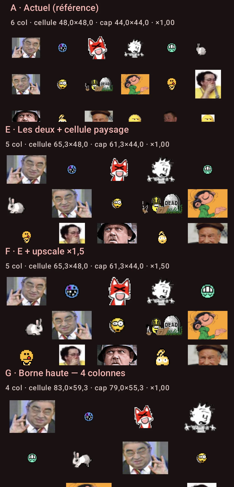
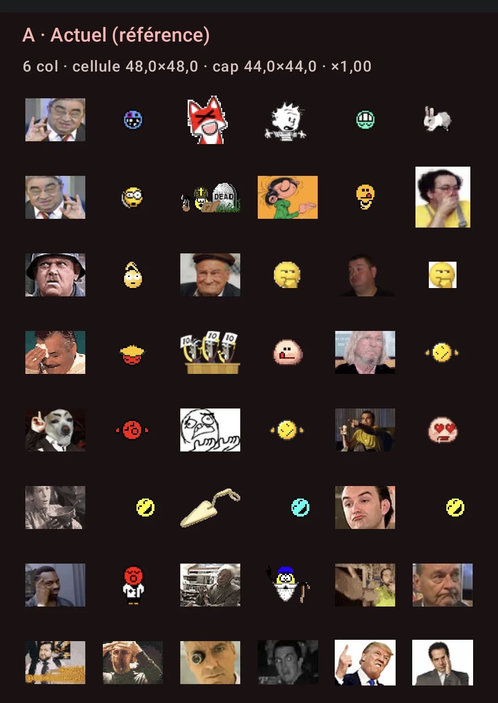
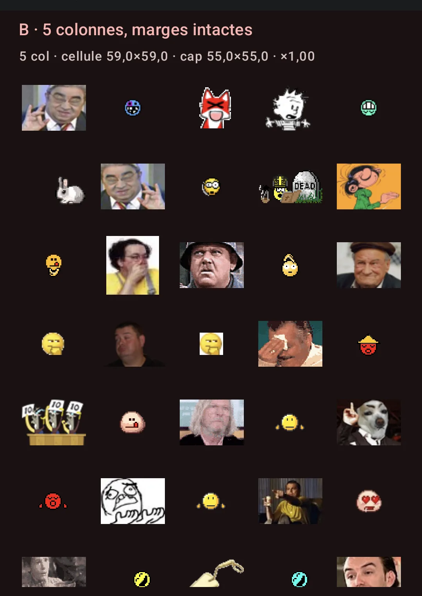
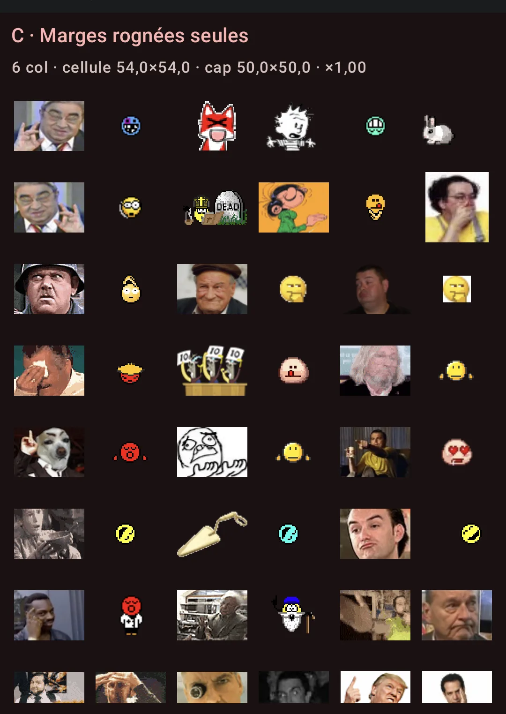
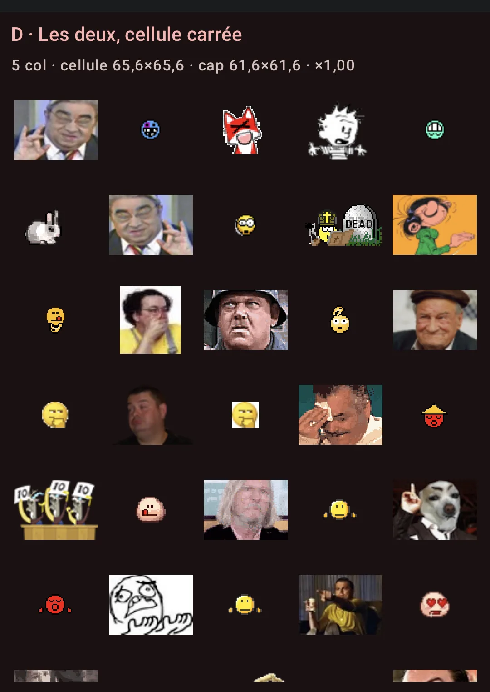
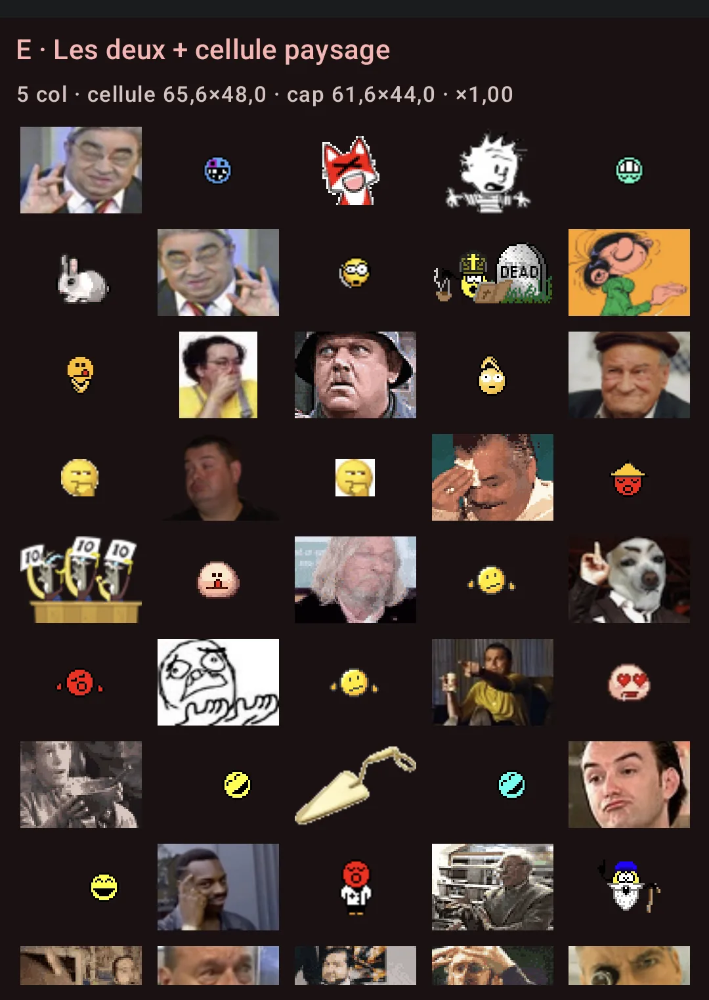
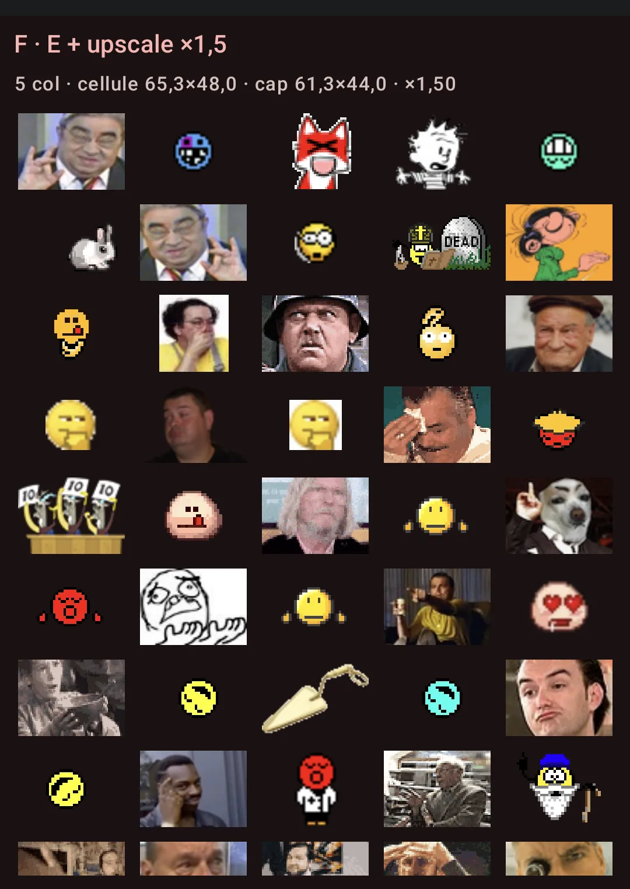
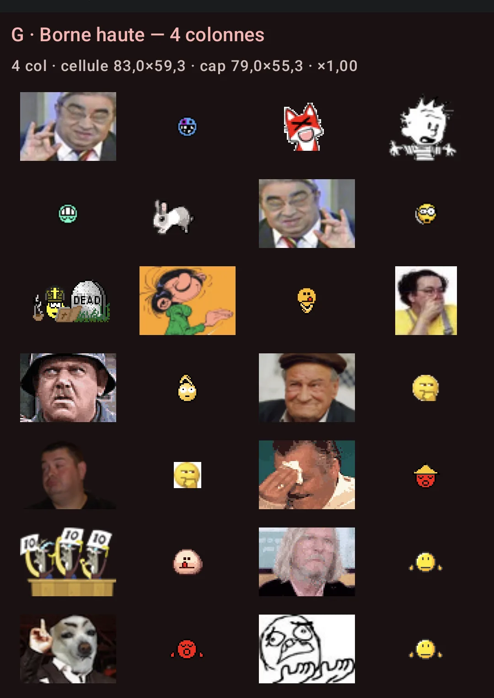
Un filet de 1 dp en outlineVariant, coins arrondis 8 dp, sur la cellule entière. Sur un corpus aussi hétérogène il donne une limite franche entre deux vignettes de tailles très différentes — au prix d'une grille plus chargée visuellement.
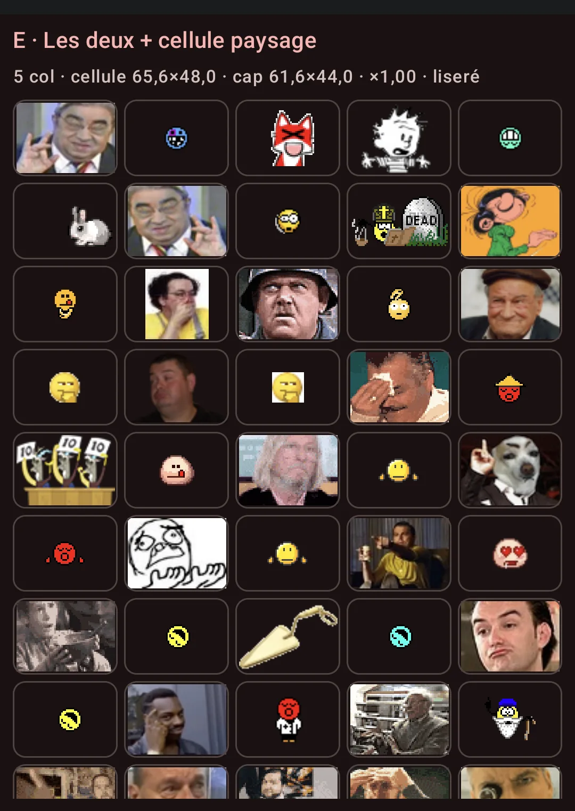
Le mode que tu as demandé pour aider au choix : il peint la boîte de la cellule, la boîte de l'image, et écrit la taille native mesurée de chaque smiley.
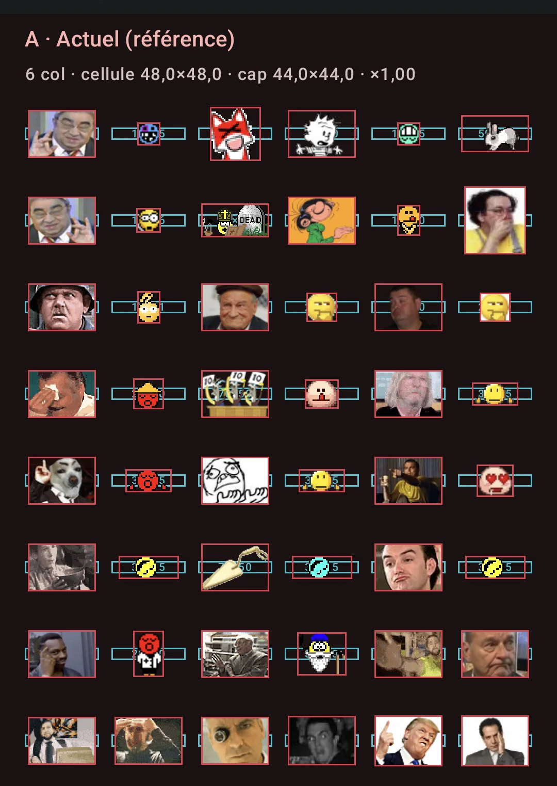
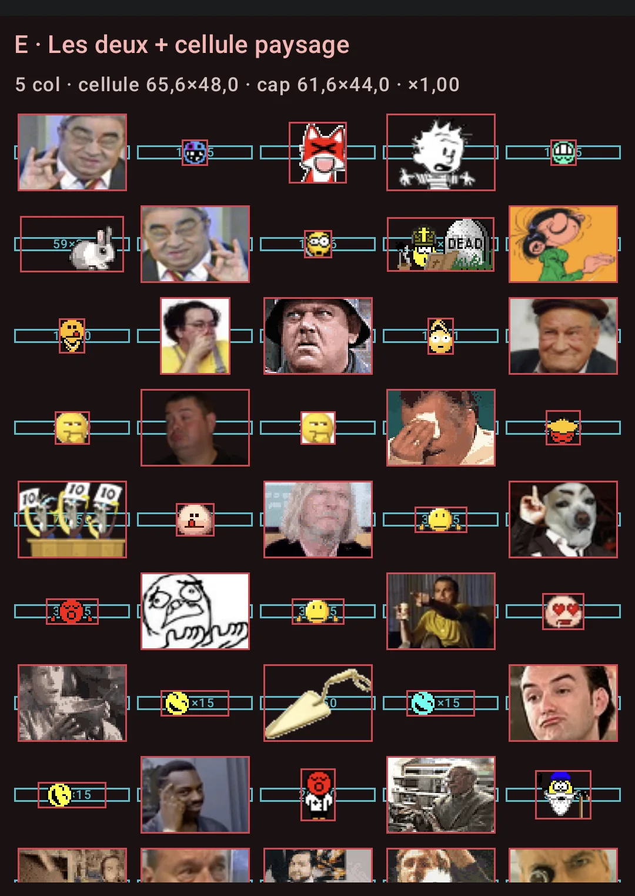
L'intérêt au-delà de l'esthétique : une vignette peut paraître petite parce que son fichier source est petit, parce que le cap a mordu, ou parce que la sonde de mesure n'a pas encore atterri. Le liseré coloré distingue les trois — sans ça, on risque de juger la politique sur une capture à cache froid.
Les quatre points que le cadrage désignait comme risques, photographiés plutôt que supposés.
Géométrie strictement inchangée — 5 colonnes, cellule 65,6×48,0, cap 61,6×44,0 aux deux échelles : seule la légende grossit. Aucune régression de layout, la grille du picker est en dp.
Mais ça révèle un écart de fond, qui complète le constat de #989 : le picker est en dp, les smileys d'un post sont en sp. À gros fontScale, un perso est donc plus grand dans le post que dans le sélecteur qui a servi à le choisir — le désaccord picker/renderer déjà noté sur les builtins (20 dp contre 16 sp) a un second visage.
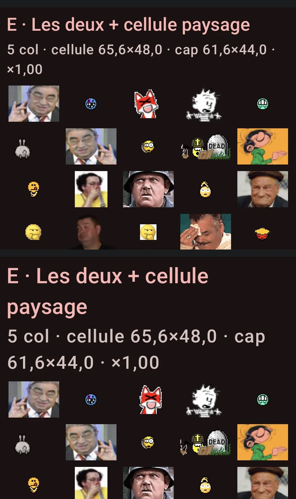
11 colonnes de 59,1×48,0 dp (cap 55,1×44,0). Le comportement responsive est confirmé : aucune cellule étirée, ce qu'un Fixed(5) en dur aurait produit. À noter : 11 et non les 12 que prédit le test unitaire pour 744 dp — les insets système mangent ~54 dp en paysage, donc la largeur réellement disponible est ~690 dp. La fonction est juste, l'entrée diffère.
Le ratio 7:5 ne s'applique plus ici : 59,1/1,4 = 42,2 dp passerait sous le minimum tactile, donc le plancher de 48 dp gagne — exactement le garde-fou prévu.
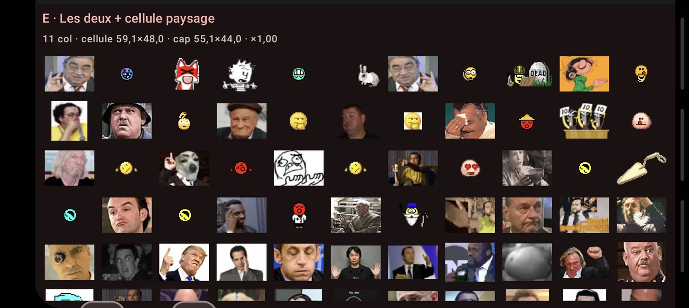
Les deux onglets partagent cette grille, donc une géométrie choisie pour les persos remodèle aussi les builtins. Et les builtins sont à 20 dp fixes : ils ne suivent pas la cellule. Résultat : plus la cellule grandit, plus la grille Standard se clairseme. Sur A c'est déjà lâche, sur G c'est franchement vide.
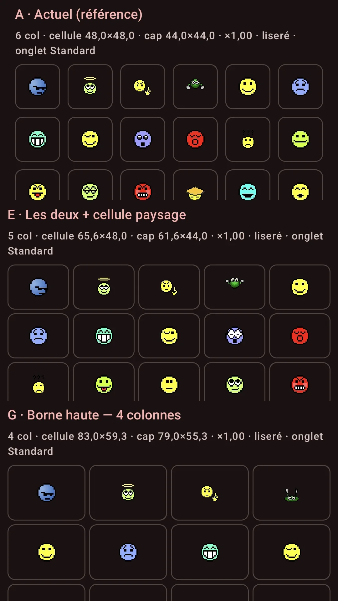
Conséquence actionnable, et elle est bon marché : la géométrie est un paramètre passé par onglet. On peut donc n'appliquer le nouveau spec qu'à l'onglet Wiki et laisser l'onglet Standard sur les 6 colonnes de 48 dp actuelles. C'est une ligne de code, ça évite le compromis de #816, et ça respecte le fait que les deux corpus n'ont pas le même problème : les persos sont trop petits, les builtins sont à la bonne taille.
La policy est déjà extraite et testée (14 tests verts, dont 8 qui prouvent que l'extraction n'a rien changé au comportement livré) : le preset retenu devient le fix en changeant les valeurs par défaut, pas en réécrivant du code.
SmileyPickerGrid de :core:ui, paramétré par une SmileyPickerLayoutSpec. Ce qui est photographié est ce que livrer donnerait.onNewIntent sans redémarrer le process — un am start -S aurait vidé le cache en mémoire et photographié le repli à froid au lieu de la politique.intrinsicSmileyDisplaySize reste intacte (§9 du contrat images, « intouchable », alignée par #871). Le picker a sa propre policy : il sert à reconnaître une vignette, un post à reproduire l'échelle de HFR. Les deux ne partagent que la taille native mesurée.Adaptive le fait, jamais un Fixed(5) en dur — qui donnerait 5 cellules étirées sur toute la largeur en paysage ou sur tablette. En paysage (744 dp utiles), le preset E donne 12 colonnes.Ce qui n'est pas encore couvert (à faire si un preset est retenu) : fontScale 1,5 et 2,0, le paysage et le split-screen photographiés, et l'onglet Standard (les builtins à 20 dp partagent cette grille — le piège de #816, où un réglage unique rendait les builtins gros et flous et les persos à l'étroit).